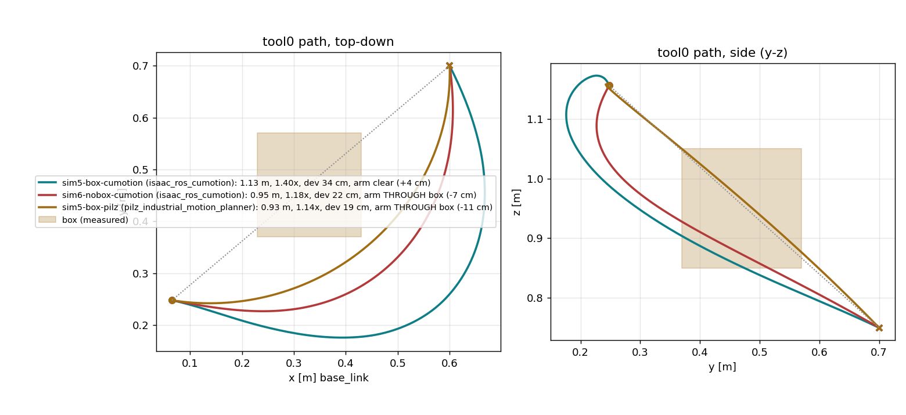

base_link, saved once and loaded by an opt-in
planner. Built 2026-08-26.
Three planners run in this cell and none of them knows the shelf exists. OMPL, Pilz and CHOMP
plan against an empty scene; cuMotion is the only one with any world at all, and that world is
a single ground plane (RUNBOOK §8b/8c). The approach demo works around this with a
hand-maintained whitelist of collision boxes — which protects only against the obstacles
somebody remembered to type in.
A straight-line plan between two poses goes straight through whatever is between them. Bench-measured on a synthetic 20 cm cube: Pilz PTP drives the arm 11 cm inside the obstacle and reports success.
cuMotion reads an nvblox ESDF built from what the camera actually saw. Same two poses, same cube: the plan arcs over it with 3.5 cm clearance at the closest collision sphere, and straightens again once the cube is removed and re-scanned.
The original design (firstmate's cell-map-slam.html, 2026-08-26 rev 2) had the
captain carry the camera and recover its pose with cuVSLAM, then register the SLAM map
to the robot through an AprilTag. The captain changed the plan the same day: the camera stays
strapped to the tool flange and the arm is freedriven by hand. That deletes an entire error
source and an entire subsystem.
| Concern | Handheld + cuVSLAM | Camera on the arm (chosen) |
|---|---|---|
| Camera pose | Visual odometry — drifts, can lose tracking on plain walls, needs a loop-closure check | Forward kinematics — sub-mm, drift-free, always available |
| Registration to the robot | AprilTag anchor base_link → map, must be up before integration starts; tag error enters every voxel |
None. Depth is integrated in base_link natively |
| Remaining unknown | VSLAM drift and the mount transform | The mount transform only — so calibrating it becomes step 1 |
| Missing packages | realsense_splitter absent; firmware 5.12.8.200 may not emit the metadata the stereo-IR mode needs |
Nothing missing — segmenter and nvblox are both in the image |
| Coverage | The whole room, including space the arm can never enter | The reach envelope — which is exactly the volume collision avoidance is about |
There is no map or odom frame anywhere in this system. The camera's
pose is read out of the robot, and the only transform that is not measured by the robot itself
is the one bolted between the flange and the lens.
/joint_states ──► base_link ──► tool0 ──► camera_link ──► camera_color_optical_frame (UR driver) ▲ │ │ ▼ calib/tool0_to_camera_<date>.yaml depth + colour ── hand-eye, AX = XB ── │ ▼ /joint_states ──► robot segmenter ──► masked depth │ ▼ nvblox (2 cm TSDF/ESDF, global_frame base_link) │ save_map ──► cumotion/maps/cell-<date>.nvblx │ load_map ──► cuMotion read_esdf_world:=true
The wrist camera sees the forearm from very close, where the XRDF spheres are a coarse model — and the strapped camera and its cable are not in the model at all. Unmasked, the arm becomes a permanent obstacle and every plan starts in collision. The masked halo stays unobserved, which cuMotion treats as free, so the mask costs nothing: bench-verified by planning successfully out of a park pose whose region was never observed.
The mount transform currently in wrist_rig.launch.py is a documented guess
(±5 cm, 4.2° residual). A map built on it is worse than no map: it would clear
paths that hit real shelves, with the planner's confidence attached. So
run_scan.sh refuses to start without a calibration file. Target < 5 mm / 1°,
independently validated against a second tag at < 10 mm / 1°.
The captain's physical time is expensive and hard to repeat, so the entire chain was rehearsed
first on synthetic depth (tools/fake_depth.py renders a table plane, a shelf slab
at y 1.4 and a 20 cm cube, and publishes the camera TF directly). The real nvblox, real
segmenter, real cuMotion and real save/load did all the rest. The arm never moved.
| Plan | Planner | Tool path | Max deviation from the straight line | Arm vs box (spheres + buffer) |
|---|---|---|---|---|
sim5-box-cumotion | cuMotion + map, pose goal | 1.13 m (1.40×) | 34 cm | clear, +3.5 cm |
sim5-box-pilz | Pilz PTP, no map | 0.93 m (1.14×) | 19 cm | through the box, −11 cm |
sim6-nobox-cumotion | cuMotion + map, box removed & re-scanned | 0.95 m (1.18×) | 22 cm | through the former box volume, −6.7 cm → detour gone |

save_map → load_map
verified; 19–33 MB per synthetic map. ESDF hand-off:
Initialized grid from nvblox: 193×217×121 @ 0.02 m. Zero-crossing lands at the
table surface within one voxel.
Segmenter output at 18 Hz and 105 k observed voxels from the parked wrist view — the real camera path works; only the mount transform is still uncalibrated.
0.10–0.13 s per plan with the ESDF world — the map does not make the GPU planner slow.
Each of these would have burned a physical session. All three are now designed out, and the reasoning is recorded so the next person does not undo them.
read_esdf_world:=true blocks forever if the ESDF service is
absent, and answers World update failed to every request if nvblox is up but
empty. planner.launch.py therefore starts cuMotion only after
map_ctl.py load exits 0, and shuts down loudly otherwise — so nothing can ever
block on the ESDF service with no map.INVALID_INITIAL_CSPACE_POSITION. ur10_map.xrdf widens
forearm/wrist_1/2/3/tool0 to 0.04 and keeps shoulder/upper_arm at 0.02 — those links never
leave the base region anyway./compute_ik against an empty scene can put the
forearm 1–9 cm inside the box; cuMotion then fails at trajopt with
UNKNOWN_STATUS. Giving cuMotion a tool0 pose goal lets it choose the
configuration against its own world. The approach demo's 170° rewind guard is re-applied to
every returned trajectory.Everything below needs the arm and the printed tags. The tooling is built and waiting; results are filled in here as each step completes.
| Tool | handeye_calibrate.py --target 18, running and waiting on tag 0 |
| Solvers | Park / Daniilidis / Tsai / Horaud (Andreff reported, never chosen) |
| Accept | < 5 mm / 1° residual, solvers agreeing within ~2 mm |
| Result | awaiting the captain's freedrive pose session |
| Method | tag 1 seen through the calibrated chain vs its pose measured by touching three corners with the TCP |
| Accept | median < 10 mm / 1° |
| Reads as | growing with angle/range → rotation error; constant offset → translation error |
| Result | awaiting calibration |
| Checks | surfaces stay put while the arm moves (smear = calibration or timestamp error); table z ≈ 0; shelf front y ≈ 1.5 (approach demo measured 1.516 at x ≈ 0); arm absent |
| Record | sweep duration, .nvblx size, observed voxel count |
| Result | awaiting calibration |
| Test | cardboard box on the straight line between two known poses, scanned → plan must route around it; box removed and re-scanned → plan straightens |
| Evidence | plan-only is sufficient; execution stays captain-confirmed at ≤ 0.05 scaling |
| Result | awaiting the scan |
| Limit | Consequence | Mitigation in place |
|---|---|---|
| Snapshot, not live | Anything moved after the scan is invisible until re-scanned | Ground plane + the approach demo's whitelist boxes stay on as independent guards; RUNBOOK §10 lists the re-scan triggers |
| Unobserved = free | The map only protects against what the camera saw; a gap in the sweep is a hole in the world | Sweep recipe covers the whole reach envelope; the same rule is what makes the robot mask free |
| Coverage = reach envelope | Walls beyond reach are not mapped | By design — the arm cannot hit what it cannot reach |
| Error budget | calibration residual + 2 cm voxels + ~1 %-of-range depth noise | 0.04 m world buffer absorbs it; thin objects may still defeat it |
| Min range ~17 cm | Surfaces closer than that to the lens are never mapped | Sweep from standoff; documented |
| Camera body not in the collision model | The planner does not know the strapped D435i sticks out of the flange | Next step once the calibrated offset is known — spheres on tool0 in ur10_map.xrdf |
| Version drift | Isaac 4.x pins librealsense 2.56.3 / firmware 5.16.0.1; this box runs 2.58.1 / 5.12.8.200 | Working so far; a firmware flash is a captain decision, never taken by an agent |
The map is strictly opt-in. start_cumotion.sh keeps its default behaviour, the
tray rig and the approach demo are untouched, and neither reads the map.
start_cumotion_map.sh is a sibling script that deliberately reuses the container
name, so docker itself refuses to run both planners at once — they would both answer the
cumotion/move_group action and MoveIt would talk to whichever won the race.
cams/cellmap/README.md (design and
procedure), RUNBOOK.md §10 (recurring commands), cams/cellmap/bench/
(rehearsal figures). Phase 2 — live map refresh from the wrist camera during normal operation —
is out of scope for v1.